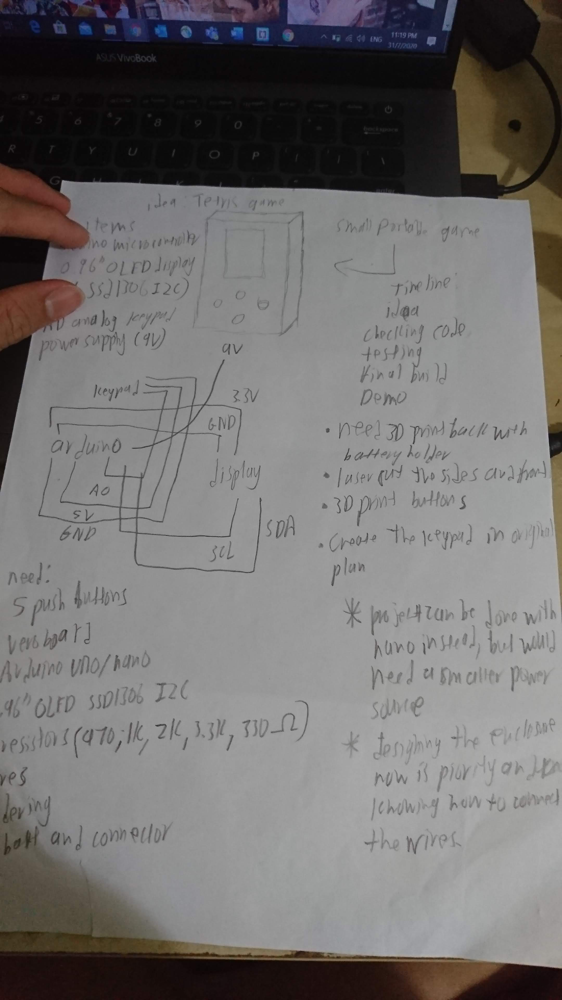
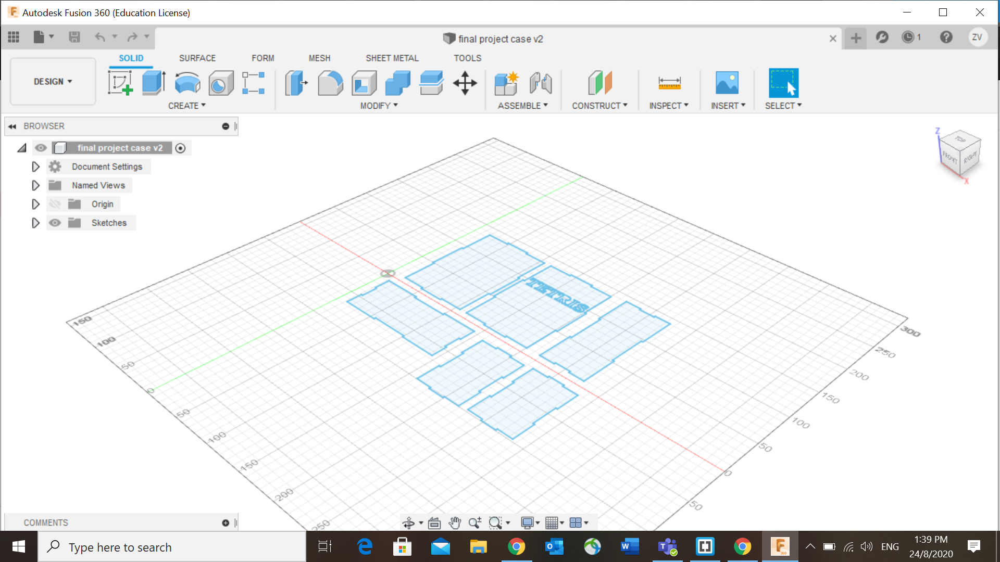
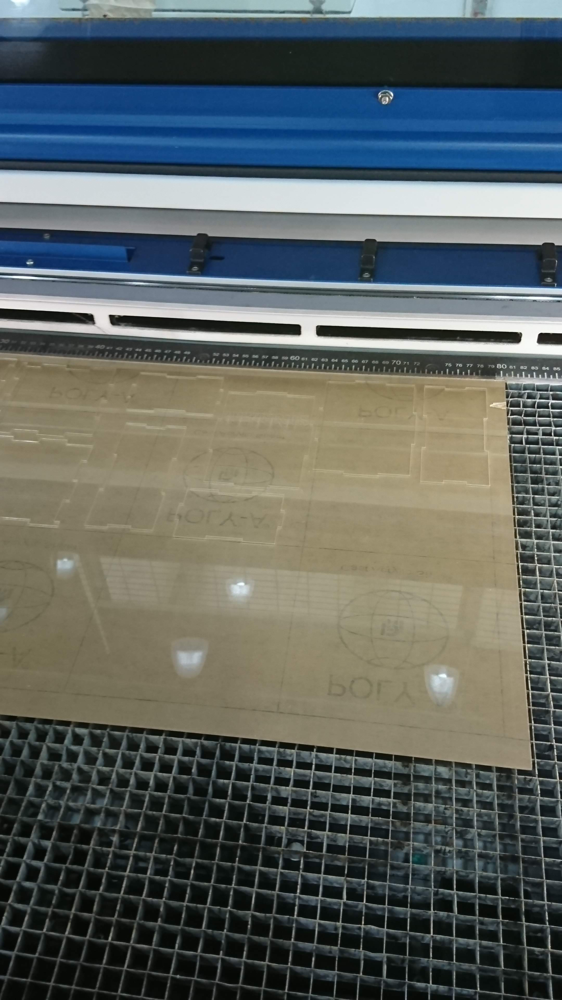

Finally the time has come:
It is now almost reaching to the end of the semester, and that means projects, and this module is no exception, every single one of us are to create a finished product with what we learnt in this module, this would mean we would need to do CAD for 3D printing and laser cutting and use our microcontroller(arduino) to do something. And we will need to document our progress through the weeks until submission of finshed product
for our finished product, we would need:
- Document our progress
- Use computer aided design and/or digital graphics components (vector/raster)
- 3D printing
- 2D laser cutting and engraving
- embedded control using a microcontroller with an input and an output.
We can get ideas for our project either from online, from what our lecturers have suggested, or from our own creative minds, but if we get our ideas online, we will need to change somethings from the original so as to not entirely copy from someone.
My plan was to create a game, so I could carry it around and play with it, a small game console. I have some plans as to what game I want to do, and in the end i have decided to create tetris, an iconic game we played before, the reason why I decided to do this game because it involves planning in your gameplay, and I like games that require us to use our heads to think when we play.
After doing some research, I realised someone has made a project for it too, and that would be the user BADFEED from arduino project hub, he has the plans for the components needed, and the code for the game. However, I have changed somethings from his code and project.
- In the original code, there was a buzzer wired to the arduino to play the tetris theme song, I have decided not to include that feature as it would be "too noisy".
- BADFEED did not create an enclosure for the game, so I would 3D print somethings and laser cut out a case for it to fit properly and make it more organised instead of just wires sticking out around on an arduino board.
So lets start assembling the project! Here is the link to BADFEED's original project, should you want to see more: tiny tetris
here is the list of items you would need to get:
- 0.96" SSD1306 OLED I2C interface (without it you wouldn't have a display!): 16 SGD
- Arduino uno board (the controller of this entire project): 7 SGD
- 5 Pushbuttons: 2.50 SGD
- Wires: 1 SGD
- 5 resistors (470, 330, 1k, 2k, 3.3k ohms): 25 cents
- 9v battery: 1.50 SGD
- 9v battery connecter: 40 cents
- veroboard: 50 cents
Do keep in mind that all these items can vary in price depending on where you decide to buy them, all of these are bought from Sim Lim Tower but you can go online to buy them.
Tools you would need are:
- soldering iron and solder
- 3D printer
- laser cutter
First thing to do is to plan out what I am going to do for my project, I have sketched and written out the things needed to do all on a piece of paper, below is the picture of my planning.
Next thing would be to gather the materials, I have spent a day decided to travel to Sim Lim Tower to buy all the items I need, and after searching around the entire mall, I have gathered them all.
After gathering the materials, the first thing that would need to start to work on is the keypad because we need to do some soldering, I followed accordingly to how the kaypad looked like and took a day to solder everything and test if there are any open points to be fixed.
.png)
.png)
.png)
.png)
One tip to give is before soldering on the three wires for the keypad, make them longer than you need to, this way, you can cut off the excess instead of needing to join wires to make it longer.
Next thing to solder will be the display holder, i choose to create a display holder because it saves space, unlike the jumper cables that could make the bottom taller and the jumper cables are very long and it would be messy to manage them, so if i make my own holder, I can control the wires better.
.png)
.png)
After soldering the keypad and holder, the next thing would be to upload the code and test everything out. so I just plugged in my arduino uno and start to upload the code, however, there is an issue, there are cpp files that needs to be uploaded together with the main code, and since I never tried uploading cpp codes with arduino codes before, this was a new issue for me to deal with. But through research, I have found the way to upload cpp codes in arduino, the way to deal with it is to add all files into a folder, then when you open the .ino code, all the codes will be shown together, and now we can upload it into the arduino board.
now at the bottom shows a demo of the project.
Now we need to think of a design for the enclosure for the project. I plan to just create a simple case to put all the components in, easy, clean, no fuss design.
Now we need to plan the things needed to laser cut and 3D print, the first thing to do will be to 3D print a battery holder and print some buttons for easier pressing.
For the 9V battery holder I found one very simple one on thingiverse, here is the link---->9V battery holder
Now that I have done all the 3D printing, I can care now about the laser cutting and completing the project.
For laser cutting I have designed a box and have chosen to have some standoffs screwed in it to help bring the arduino board, keypad and screen.
After creating the box, I took their sketches, save as dxf, and export all the files out to get it ready for laser cutting
Here you can see the pieces after it has been cut, because I'm using clear acrylic, the reflection on it is ridiculus, but you should be able to see the outline of the pieces.
After cutting out the acrylic pieces, I drilled some holes, arranged the pieces properly and glue some parts together
After gluing the acrylic and screwing the standoffs onto the case, gluing the buttons, fitting everything, the product is finished.

Here is a video of the finished product.